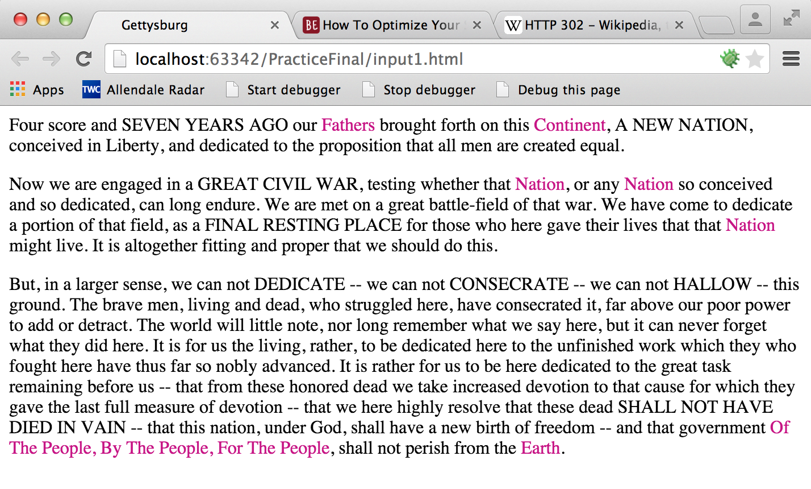

File input1.html contains the Getteysburg address marked up with two classes:
allcaps and upcase. For parts 1 and 2, manipulate this file as follows:
Using php, load the file as an XML document and create two lists: The list of text marked with the
allcaps class, and the list of text marked with the upcase text.
Your output might look something like this:

Hints:
$xmlDoc in the starter code is a XML document, not an HTML document. This means
that you can't search this object by class name or id. Instead, search by tag name, then double-check the class
and/or id.
Write Javascript to make the text marked with the allcaps class ALL CAPS and make each word in the text
marked with the upcase class Begin With A Capital Letter
Your output might look something like this:
Write a web page that will compute and display the maximum, minimum, and average test values. The query string should indicate the number of tests. Generate a form with the required number of inputs. After submitting the form, the page should display the maximum, minimum, and average values. It should also highlight the maximum and minimum values.
Your output may look something like this:
You may use any mix of PHP and JavaScript you like. I used PHP to generate the form and JavaScript to compute and highlight the maximum, minimum, and average.